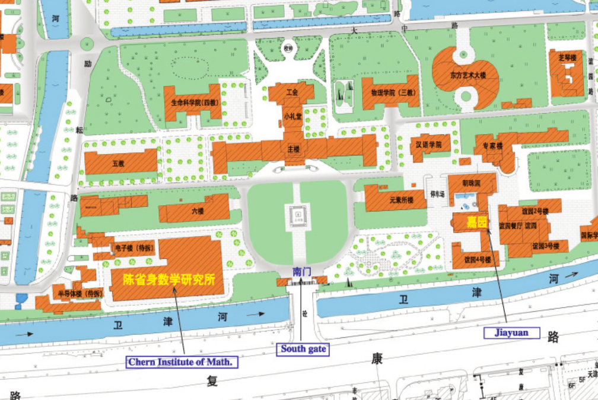

The conference will take place at the
Chern Institute of Mathematics, Nankai University, Weijing Road No.94, Tianjin, China.
The participants will be lodged at the Jiayuan Hotel (嘉园宾馆), the guest house of Nankai University, very close to the Institute. Both places are at the South Gate of Nankai University, on Fukang Road: the Institute is west of the Gate (turn left), the Hotel is east of the Gate (turn right).
Please, check also the map of the Nankai campus.
From Tianjin to the Hotel
When you arrive to Tianjin, you will probably be at one of the following places:
- Tianjin Binhai International Airport, TSN.
- Tianjin Railway Station (Tianjin, 天津).
- Tianjin West Railway Station (Tianjinxi, 天津西).
- Tianjin South Railway Station (Tianjinnan, 天津南).
By Taxi
From the airport, it takes about 40 minutes, 25 km, 60-80 RMB. From one of the stations, it takes between 20-30 minutes. If you can choose at which train station to drop off, consider that the West and South stations are less crowded than the main station, so there will be a shorter waiting time for the taxi. If you don't find the place where the taxis are, you can ask for help to the people around. If they don't speak English, show them the following note:
出租车taxi在哪里 (where is the taxi?)
When in the taxi, tell the driver that you are going to the South Gate of Nankai University on Fukang Road. If he doesn't understand you, show him the written address:
南开大学南门位于复康路上，总理像那个门
If your trip is reimbursed by the conference, please ask the taxi driver for a receipt (发票).
By Metro
Please check the Tianjin Metro Map. The closest station to the Institue is Tianta, on Line 3, about 1.5 km away from the South Gate, see the map of the walk.
{kind=link}
{kind=link}
Getting to Tianjin
If you are travelling internationally, you will fly to China. You can search for flights to Tianjin Binhai International Airport (TSN) or to Beijing Airport (PEK). If your trip is reimbursed by the conference, please buy an economy class ticket, and keep all your receipts, tickets and boarding passes for reimbursement.
- TSN has direct flights from all major cities within Mainland China, as wells as direct flights from Taipei, Hong Kong, Seoul, Osaka, Nagoya. Even if you don't have a direct flight to TSN, you might find a solution with connecting flights. If you fly to TSN, you will arrive directly to Tianjin. Then see the instructions above to reach the conference place.
- PEK is one of the world's largest airports with direct flights from almost all major airports around the world. If you are flying to PEK, you should try to arrive before 4pm, and depart after 12pm, to have some time for the local transportation. From PEK you can reach Tianjin by a Shuttle bus or by train.
From PEK to Tianjin by Shuttle bus
From Terminal T1 or T2, go to Terminal T2, first floor, Gate 15. From Terminal T3, go to the first floor, Gate 1. There you will find the Inter-Provincial Shuttle bus to Tianjin West Railway Station. The Shuttle operates from 6:30am-11:00pm，and it takes about two hours and half, see the timetable. You have to buy a ticket (82 RMB) before boarding the bus, you can buy it there at a small front desk. Please make sure to get on the right bus! The Shuttle arrives at Tianjin West Bus Station, 2 Xiqing Road, Hongqiao District, Tianjin (200m west of Tianjin West Railway Station). From the Bus station, you have to follow the taxi signs and walk for about 800 meters to find the taxi.
From PEK to Tianjin by train
This option is probably the easiest for non chinese speakers. Take the metro from the airport to Beijingnan station (~90 minutes, the price is about 25 + 5 RMB), and take the second-class train to Tianjin station or Tianjinxi station or Tianjinnan station (~30 minutes, price 54.5 RMB). You can buy train tickets online or at the station. This website sells tickets for trips happening in the next 60 days. If your trip is reimbursed by the conference, don't forget that we can only reimburse second class train tickets.